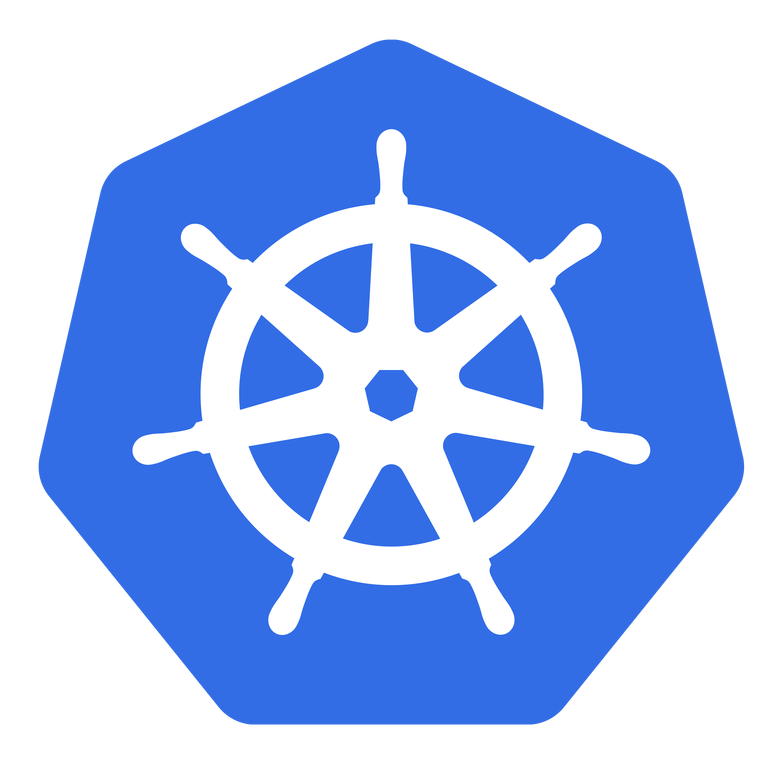
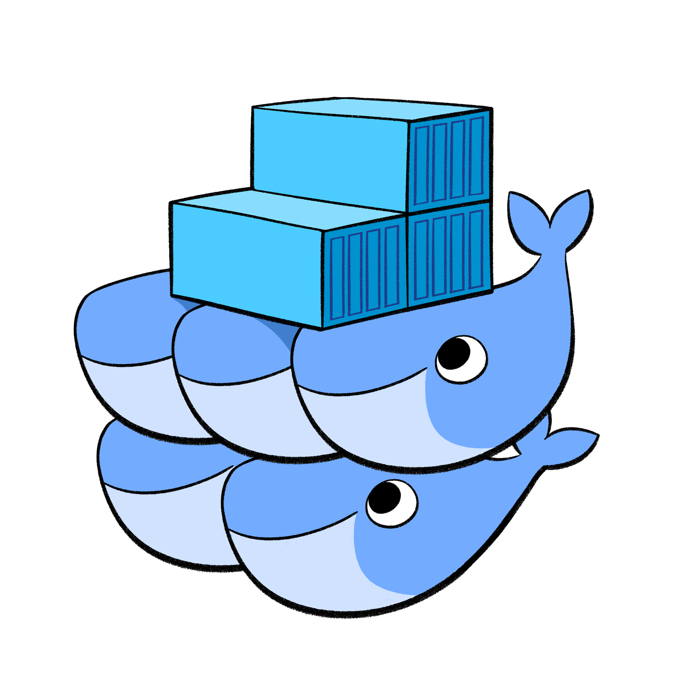
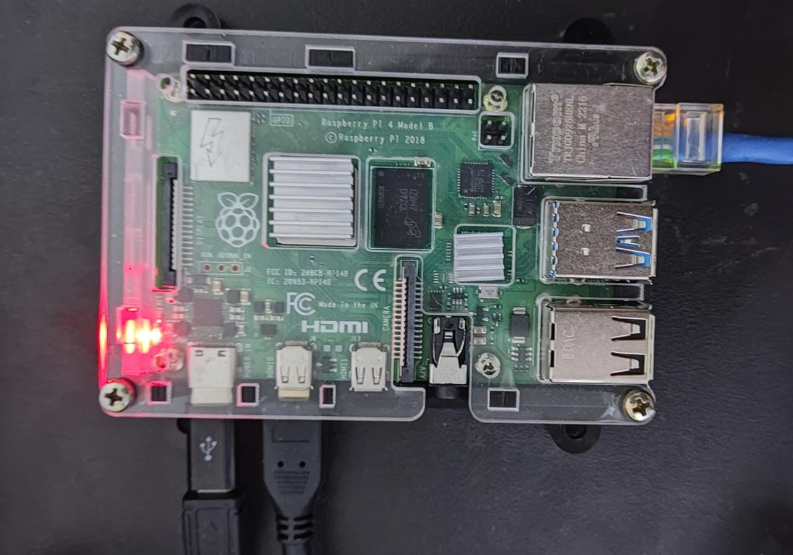
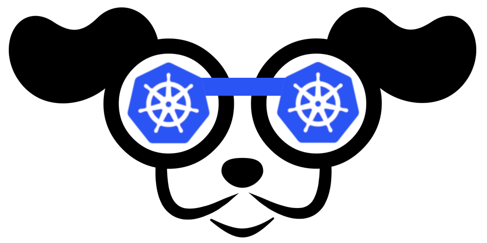
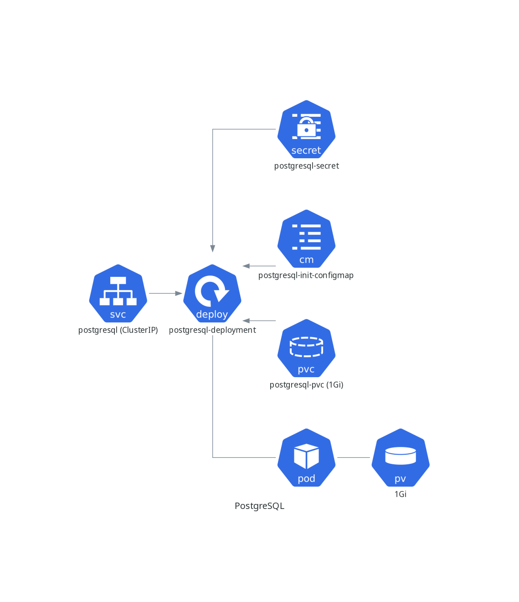
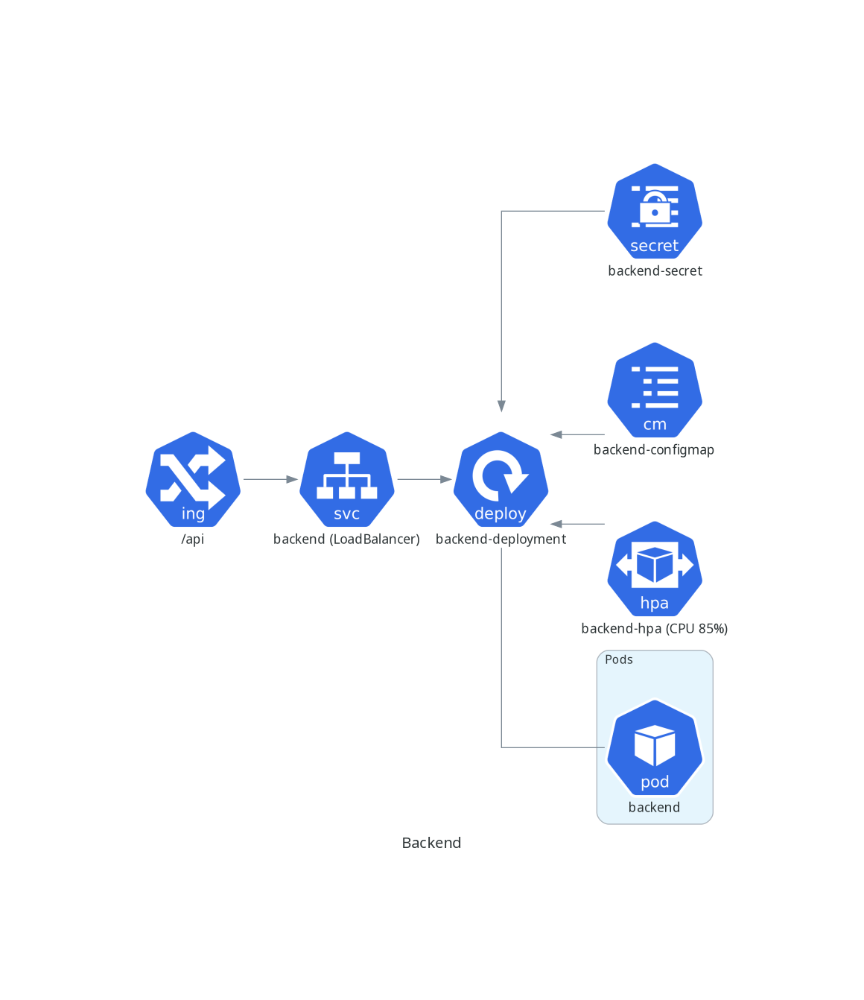
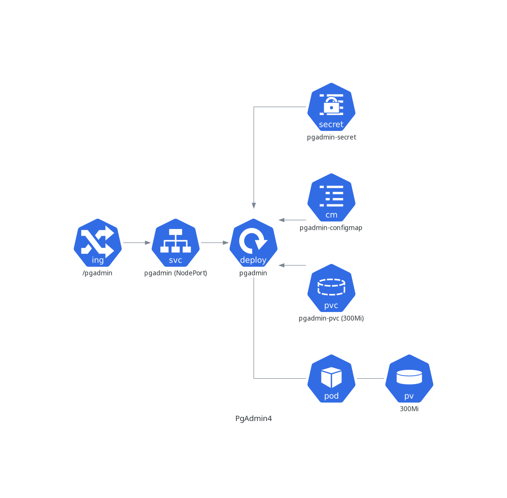

Orquestração de Contêineres com Kubernetes
Lucas S. Vieira
7 de outubro de 2022
Índice
- Introdução ao Kubernetes
- Prova de Conceito
- Deploy do Exemplo no Kubernetes
Introdução ao Kubernetes (K8s)

O que é Kubernetes?
- Ferramenta criada pela Google para orquestração de contêineres.
- Excelente para escalabilidade horizontal e gerenciamento de recursos.
- Exige configuração minuciosa.
- A menor unidade do K8s são os Pods, que abstraem um ou mais contêineres.
Kubernetes vs. Docker Compose

- Compose usa Serviços, Kubernetes gerencia Pods através de ReplicaSets e similares.
- Kubernetes é pensado para HA.
- Pods são efêmeros, diferente de serviços.
- Serviços são contêineres com configuração extra. Pods são muito mais maleáveis.
Kubernetes vs. Docker Swarm

- Swarm leva o Compose para clusters.
- Swarm é muito mais simples e familiar para quem usa Compose.
- Swarm não suporta HA.
- Pode ser necessário muito uso de ferramentas extras para configurar um cluster com Swarm (Vagrant, Terraform, Ansible…)
Prova de Conceito
Tecnologias utilizadas
- API REST, CRUD de usuários, sem autenticação
(https://github.com/luksamuk/techimera-k8s/) - Feita em Common Lisp, Permite debug remoto via Swank Server
- Usa PostgreSQL 14
- Docker Compose a título de comparação
Imagens para Contêineres

- Imagem da aplicação, hospedada no DockerHub
(https://hub.docker.com/repository/docker/luksamuk/techimera) - PostgreSQL 14
- PgAdmin4 (apenas no K8s)
Kubernetes on-premise

- Manjaro Linux arm64 rodando em um Raspberry Pi 4 Model B
- Quad core, 8GB RAM, 64GB SD
- K3s da Rancher (https://k3s.io/)
- K8s modificado e com baixo footprint; bom para IoT mas também para larga escala
Utilitários

- K9s (https://k9scli.io/) – Ferramenta CLI para K8s
- Kubectl – Utilitário CLI padrão
- DBeaver CE – Gerenciamento de BD
Deploy no Kubernetes
Agora, vamos provisionar o PostgreSQL, o backend, e o PgAdmin4.
Mas primeiro, vamos analisar a arquitetura desse provisionamento.



Aplicando configurações
Temos Kubectl instalado e a configuração de acesso em ~/.kube/config, então
basta usarmos o console diretamente.
kubectl apply -f namespace.yml
kubectl apply -f postgresql.yml
kubectl apply -f backend.yml
kubectl apply -f pgadmin.yml
Fazendo requisições no backend
Para criar alguns usuários…
curl -X POST 192.168.2.6:30000/user/seed
Para recuperar os usuários…
curl 192.168.2.6:30000/user
Port-forwarding
Podemos acessar um recurso no cluster de várias formas. Para um serviço ClusterIP, podemos espelhar a porta de um deployment na nossa máquina, por exemplo.
kubectl port-forward \
-n techimera \
deployment/postgresql-deployment \
5432:5432
Ingresses
Ingresses expõem uma aplicação através de endpoints na porta 80.
No K3s, o gerenciador do cluster é o Traefik Proxy, então temos configuração específica para ele.
kubectl apply -f ingress.yml
Testando ingresses
Requisições na API:
curl 192.168.2.6/api/user
Acesso ao PgAdmin4: